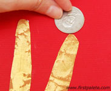

Chinese Coin Tree
The coin tree is a popular Chinese ornament believed to bring good luck and prosperity. Create your own coin tree to celebrate the Chinese New Year or make it as a project while learning about Chinese culture.
Materials
- Red construction paper
- Any brown-colored paper
- Gold poster paint or tempera paint
- Coins
- Paint brush
- ScissorsGlue
Steps
- On any brown-colored paper, make an outline of a tree trunk by tracing around your fingers and forearm.
- Crumple up the paper.
- Gently spread out the paper.
- Add a minimal amount or no water at all to gold poster paint or tempera paint. Paint the tree trunk and the branches. The crumpled surface of the paper will absorb the paint unevenly, giving it the appearance of a tree bark. Once you've covered the entire tree, allow the paint to dry.
- When the paint dries, cut out the entire tree trunk.
- Glue the tree trunk onto background paper. Red is a classic color in Chinese culture though you can opt for other colors as well.
- Gather various-sized coins to use for printing the coins on the tree.
- To begin printing, paint on one side of the coin.

- Press the painted coin close to a tree branch.
- Lift the coin to reveal the golden coin print.
- Continue making coin prints until the tree is laden with coins.
- Once the paint dries, hang up the picture for lots of good luck and prosperity.